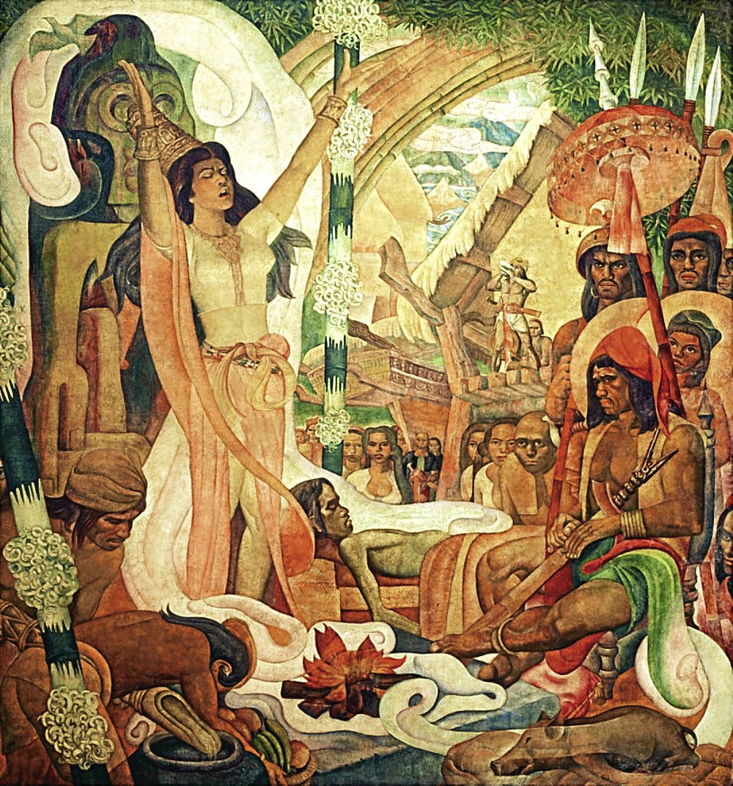

Babaylans
Babaylans and catalonans were not only cultural and religious leaders but they also managed the health care of their barangays or tribes. They held a high level of power that was equivalent to datus, the leaders of the barangays.
Babaylans were also known as .... (ADD)

The Progress of Medicine in the Philippines Botong Francisco

Noel Escultura from Filipino Heritage
Traditional Filipino medicine takes a holistic view of health.
A person's
physical,
mental,
emotional,
spiritual,
environmental
are interconnected.